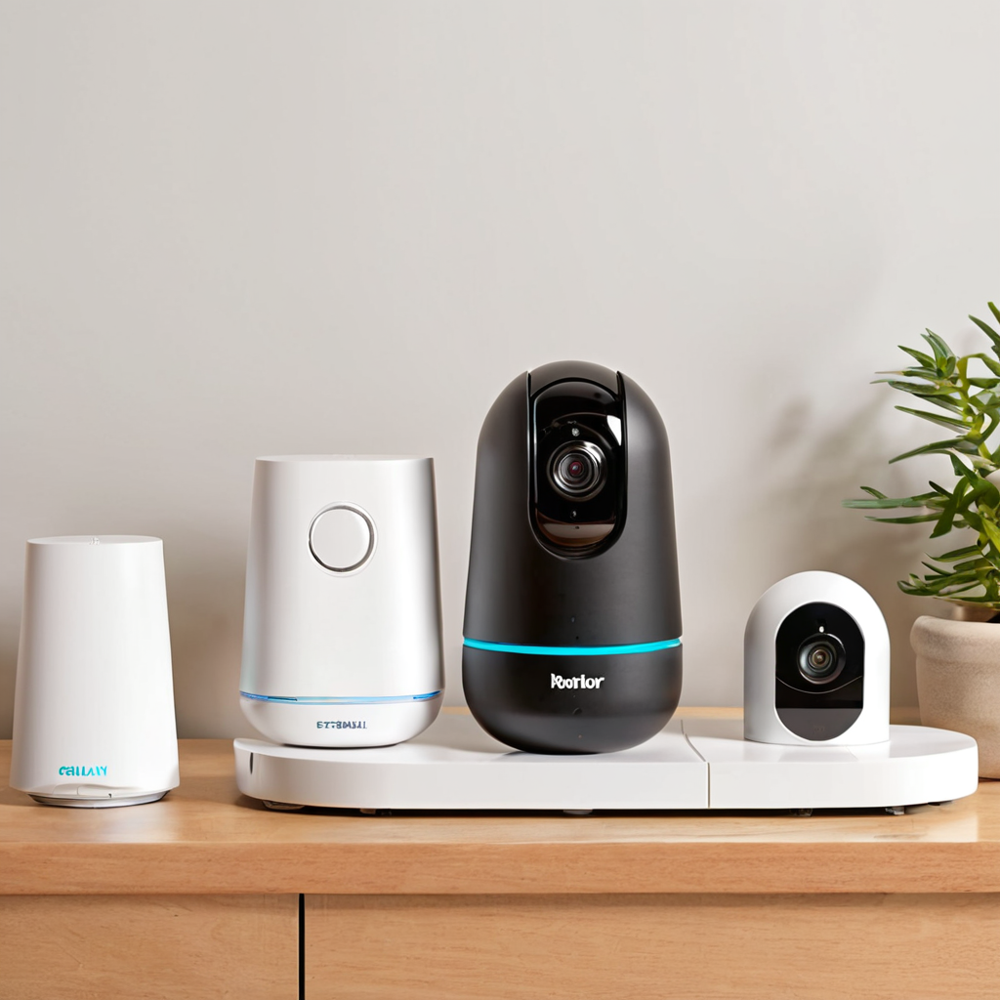
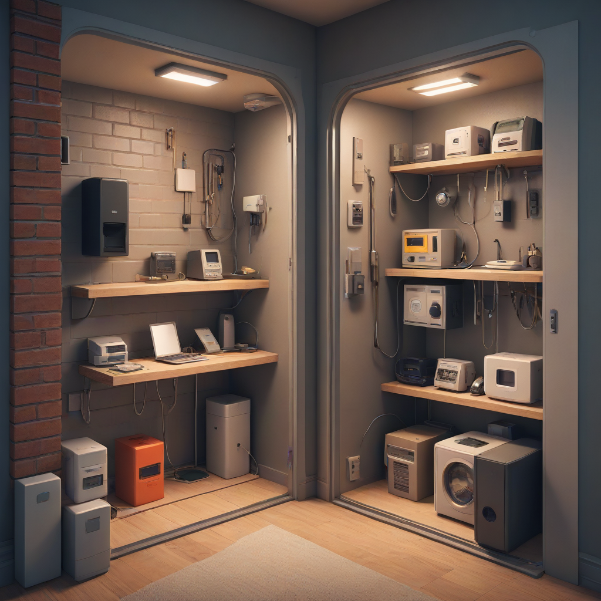
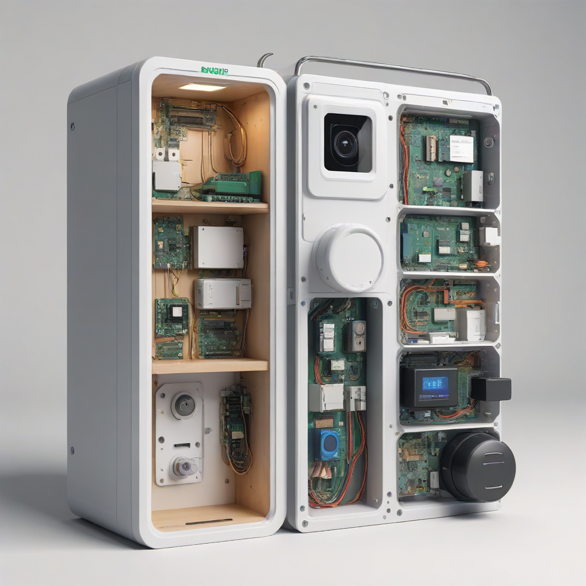

Living in a rental property often comes with unique challenges when it comes to home safety. You want to feel secure in your space, yet you are bound by lease agreements that prohibit permanent modifications. Drilling holes for hardwired alarms or mounting brackets can mean losing your security deposit or even facing eviction. This creates a difficult balance between protecting your belongings and adhering to landlord rules. Fortunately, technology has advanced significantly, offering robust solutions that provide peace of mind without a single screwdriver.
Security is no longer about heavy steel gates and concrete foundations. Modern renter friendly alarm systems utilize wireless connectivity, battery power, and strong adhesives to secure your apartment effectively. Whether you are in a high-rise studio or a suburban duplex, there are options tailored to your specific layout and lease restrictions. The goal is not just to stop an intruder, but to deter them entirely by creating a visible, active defense system that does not leave a mark on the walls.
In this comprehensive guide, we will explore the most reliable best no drill security systems for renters available in 2026. We will break down specific categories including sensors, cameras, and physical barriers, providing real product names, pricing, and honest assessments. Our focus remains on safety first and budget consciousness, ensuring you can upgrade your home protection without breaking the bank or your lease agreement.
Understanding Renter-Friendly Security Standards

Before purchasing equipment, it is essential to understand what qualifies as "renter-friendly." In the security industry, this generally means any device that does not require permanent structural changes. This includes systems that run on batteries rather than hardwired power, and mounting methods that utilize 3M Command strips, adhesive pads, or tension-based clips rather than screws and anchors.
Landlords generally care about two things: wall damage and electrical interference. A wireless system that adheres cleanly to the surface will pass inspection in most cases. However, always check your lease agreement. Some landlords allow minor adhesive mounts but prohibit anything that interferes with existing building security infrastructure. Understanding these boundaries helps you choose the right best no drill security systems for renters without risking financial penalties.
Key Features to Look For
- Battery Life: Look for devices with at least a 6-month battery life to reduce maintenance frequency.
- Adhesive Quality: Ensure the mounting tape is rated for the surface material (drywall, brick, or wood).
- Hub Connectivity: Systems with Wi-Fi or Z-Wave hubs allow for easy expansion without cabling.
- False Alarm Reduction: Pet-friendly sensors are crucial for apartments with cats or dogs.
- Mobile Notifications: Real-time alerts allow you to respond quickly from anywhere.

>Top Wireless Door and Window Sensors
The entry points of your home are your first line of defense. Wireless door sensors detect when a door or window is opened and send a signal to the central hub. For renters, these are the building blocks of a complete alarm system. They are small, unobtrusive, and typically use a magnetic reed switch to function. When the magnet on the door frame separates from the sensor on the window or door, the alarm triggers.
Ring Contact Sensors
Ring continues to dominate the smart home space with their contact sensors. They are compact and integrate seamlessly with the Ring Alarm system. The installation is straightforward; you peel the backing off the adhesive pad and press it onto the frame. Most renters find these reliable for entryways and ground-floor windows. They require a Ring Alarm Base Station to function, which can be plugged into a standard outlet.
- Pros: Excellent app integration, works with Alexa, easy rearm.
- Cons: Requires a monthly subscription for advanced features, adhesive may leave residue on textured walls.
Wyze Door/Window Sensors
For those on a tighter budget, Wyze offers a compelling alternative. Their sensors are incredibly affordable and often sold in multi-packs. They connect directly to the Wyze app without needing a separate hub if you have Wi-Fi coverage in that room. This makes them ideal for renters who do not want to deal with a central base station. The design is sleek, and the adhesive is strong enough to hold for years but removable with heat.
- Pros: Low cost, hub-free operation, easy setup.
- Cons: Wi-Fi dependency can cause lag if signal is weak, limited range.
Eufy Security Door Sensors
Eufy focuses heavily on local storage and privacy. Their sensors work with the Eufy Security Hub, but data is stored locally on the hub rather than the cloud. This is a significant selling point for privacy-conscious renters. The sensors are slightly larger than Ring but offer a more robust build quality. They are designed to withstand the wear and tear of frequent door usage in multi-unit buildings.
- Pros: No monthly fees, local storage, strong battery life.
- Cons: Higher upfront cost, larger physical footprint.
Adhesive and Clip-On Security Cameras
Visual verification is crucial. While sensors tell you something opened, cameras show you what happened. Adhesive security cameras allow you to monitor your living space without drilling into drywall. For 2026, the technology has shifted toward stronger mounting solutions that can handle the weight of modern cameras.
Indoor cameras are generally safer for renters to place on shelves or desks, but sometimes you need wall mounting. Command strips are the industry standard here. However, for outdoor or balcony monitoring, magnetic mounts are often a better choice. These allow you to attach the camera to a steel bracket screwed into the ground or a planter, keeping the wall mount temporary.
Blink Outdoor Mini
The Blink Mini is a classic choice for indoor monitoring. It is small enough to hide in a bookshelf but powerful enough to detect motion and send alerts. The adhesive mount is included and holds well on smooth surfaces. It connects via Wi-Fi and stores video in the cloud, though a local USB drive option is available with the Sync Module. This flexibility makes it a top contender for best no drill security systems for renters.
Reolink E1 Zoom
For those who want PTZ (Pan-Tilt-Zoom) capabilities, Reolink offers excellent wireless options. The E1 Zoom can be mounted on a desktop or wall using the included adhesive plate. It allows you to rotate the camera remotely to check different corners of the room. This reduces the need for multiple cameras, saving you money and wall space.
- Pros: Remote control, night vision, local SD card storage.
- Cons: Requires power outlet nearby, heavier than standard cameras.
Arlo Essential Spotlight
If you have a balcony or a porch that is part of your rental unit, the Arlo Essential is a great battery-powered option. It uses a magnetic mount that can be placed anywhere with a strong signal. The spotlight feature acts as a deterrent, flashing when motion is detected. It is fully wireless, meaning you do not need to run power cables through the apartment.
Physical Barriers: Apartment Door Barricades
Electronics can fail or be disabled. Physical barriers provide a backup layer of security that cannot be hacked. Apartment door barricades are essential for renters living on the ground floor or in buildings with weak external locks. These devices wedge against the floor and the door knob, preventing the door from opening even if the lock is picked or forced.
Addalock Portable Door Security Lock
The Addalock is a popular choice because it is portable and easy to hide. It looks like a small metal bar that you slide across the door frame. Once engaged, it locks into place, preventing the door from opening more than a few inches. It is effective against brute force and does not require installation.
Door Jammer Alarm
For a combination of physical and audible security, a Door Jammer Alarm is highly effective. It sits on the floor and jams against the door frame. If someone tries to force the door open, it emits a 120-decibel siren. This loud noise alerts you and neighbors immediately. It is a cost-effective addition to any renter friendly alarm systems setup.
- Pros: No installation, works on most doors, loud deterrent.
- Cons: Can be tripped over, must be repositioned when leaving.
Smart Locks for Renters
Upgrading your lock is a gray area in many leases. However, smart locks for renters exist that do not require replacing the exterior hardware. These devices attach to the inside of your door and control the existing deadbolt. This means you keep the landlord's lock intact while adding keyless entry for yourself.
August Wi-Fi Smart Lock
August locks are designed specifically for this scenario. They mount on the interior side of the door and connect to the existing keyhole. You can lock and unlock the door via your smartphone. If you lose your key, you can still enter with the key, but the smart lock allows you to grant access to guests or track when you enter and leave.
- Pros: Non-invasive installation, works with Apple HomeKey, automatic locking.
- Cons: Expensive, requires a compatible deadbolt thickness.
Level Lock
The Level Lock is even more hidden. It replaces the interior knob and the bolt mechanism inside the door, leaving the exterior knob completely unchanged. This is the stealthiest option available. It is virtually invisible to landlords during move-out inspections because the exterior looks exactly the same. However, installation is more involved than the August lock and requires removing the interior knob.
Comparison of Top Renter Security Systems
To help you decide which system fits your needs and budget, we have compiled a comparison of the leading options available in 2026. This table highlights the key differences in installation, cost, and features.
| System Name | Installation Type | Estimated Cost | Best Feature | Monitoring Fee |
|---|---|---|---|---|
| Ring Alarm 5-Piece Kit | Adhesive Mount | $199 | App Integration | $10/month (Optional) |
| Wyze Home Security System | Adhesive Mount | $149 | Budget Friendly | $0 (Basic) |
| Eufy Security E400 | Adhesive Mount | $249 | Local Storage | $0 |
| August Wi-Fi Smart Lock | Interior Mount | $229 | Keyless Entry | $0 |
| Door Jammer Alarm | Portable Wedge | $25 | Physical Security | $0 |
Installation Tips to Avoid Damage
Even with no-drill systems, improper installation can leave marks or damage paint. Follow these expert tips to ensure your apartment remains pristine for the move-out inspection.
- Clean the Surface: Before applying any adhesive, wipe the wall or frame with rubbing alcohol. Dust and oil reduce the bond strength of the adhesive.
- Use Command Strips: If the manufacturer's adhesive is too strong, buy 3M Command strips. They hold weight but peel off cleanly without taking paint with them.
- Heat for Removal: When it is time to remove a sensor or camera, use a hair dryer on the adhesive area for 30 seconds. This softens the glue and prevents tearing.
- Avoid Textured Walls: Adhesive does not bond well to popcorn ceilings or heavily textured stucco. Place sensors on smooth trim or flat wall areas.
- Check Weight Limits: Many cameras have weight limits for their adhesive mounts. If the camera is heavy, use a tension rod or a heavy shelf instead of wall mounting.
Frequently Asked Questions
Do no-drill security systems work with existing home alarms?
Most modern wireless systems operate on their own independent networks (Wi-Fi or Z-Wave). They generally do not interfere with a landlord's existing hardwired system. However, if your building has a centralized alarm panel, check with management before adding a new hub to ensure there is no signal interference. In most cases, they work side-by-side without issues.
Can I take my security system with me when I move?
Yes, this is one of the biggest advantages of best no drill security systems for renters. Because they are battery-powered and use adhesive mounts, you can easily remove them and reinstall them in your new home. Just remember to charge the batteries before moving them to ensure they are ready for immediate protection at the new location.
Do I need a subscription for these systems to work?
Not necessarily. Most systems function as local alarms without a subscription. They will sound a siren and send you a push notification. Subscriptions are usually required for cloud video storage, professional monitoring (which calls the police), and advanced automation features. If you are budget-conscious, you can start with the basic free tier and upgrade later if needed.
What is the best battery life for rental security devices?
Look for devices that offer at least 12 months of battery life on standard AA batteries. This reduces the maintenance burden, which is helpful if you are traveling or busy. Lithium batteries generally perform better in extreme temperatures, which is important if you have sensors on exterior doors or in unheated areas of the apartment.
Will these systems work if the power goes out?
This depends on the system. If you rely on Wi-Fi cameras, they will not work if your internet goes down during a power outage unless you have a backup internet connection. However, the sensors and the physical barricades will still function. The Ring and Eufy hubs often have built-in backup batteries that keep the alarm active for a few hours during a blackout, ensuring you remain protected.
Conclusion
Securing your rental property does not mean compromising on safety or risking your security deposit. By utilizing the best no drill security systems for renters, you can create a robust defense strategy that combines smart technology with physical barriers. The key is to layer your security: start with strong locks, add wireless sensors for detection, and supplement with cameras for verification.
Remember that the best system is the one you actually use. Choose a setup that fits your budget and is easy to manage through your smartphone. Whether you opt for the versatility of Ring, the privacy of Eufy, or the simplicity of a Door Jammer, taking proactive steps today can prevent significant issues tomorrow. Always document your condition upon move-in and keep receipts for your security equipment to prove ownership during lease termination.
Take action now to audit your apartment's vulnerabilities. Check your windows, test your locks, and consider installing a starter kit. Your peace of mind is worth the investment, and with the right tools, you can protect your home without ever picking up a power drill.